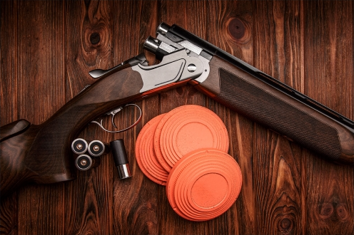
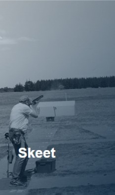

About: Clay Target Shooting
DTL Shooting & Variants:
What Is DTL:
DTL(Down-The-Line) clay target shooting is a variant of trap-shooting that is popular in Australia, New Zealand, South Africa, Zimbabwe, Canada, the United Kingdom and Ireland. It origins from the now banned pigeon shooting and the very beginnings of clay target sport. The competitors uses a double-barrel-shotgun, usually ‘under-and-over’ type, and allowed to fire both barrels at one single target released on the call ‘Pull!’.
Traditional DTL layouts is 5 stands in a crescent shape, about 15-metres away from a trap house, which throws a random target between 0 and 22.5 degrees to either sides of the centre post, set 45 degrees from the trap house. The competition is shot in ‘squads’, normally 5 shooters. The competitor 1 shoots 1 target; then competitor 2; etc. Until each have shot 5 targets, they move on to the next and repeat.
Other variants are Double Rise, Single Barrel, etc.
Variants:
Double Rise:
Double rise is a variant of DTL, but having two clays throw at the same time or one after another. Each shooter must load two cartridges per shot and successfully hit the two targets.Single Barrel:
Single barrel is same as DTL but the shooters only load one cartridge for their shots. Meanwhile, the shooters will move on to the next spot after their shot then repeat.Point Score:
Same as DTL but different on the way of marking. Hitting on the first get three score, on a second gets two, and missing leaves none.

Skeet:
Skeet was invented by Charles Davis in the 1920s as a sport called Clock Shooting. Originally the course was a circle of 25-yards radius that lies of a clock and a trap set at the 12 o’clock position. However, when a chicken farm started next door, the game evolved by placing a second trap at the 6 o'clock position and cutting the course in half to solve the problem.The first National Skeet Championship was held in 1926. Shortly thereafter, the National Skeet Shooting Association was formed.
American skeet is administered by the National Skeet Shooting Association (NSSA). The targets are shot in a different order and are slower than in Olympic skeet. There is also no delay after the shooter has called for them, and the shooter may do this with the gun held "up", i.e. pre-mounted on the shoulder (as is allowed in trap shooting).
The New Zealand Clay Target Shooting bases its rules on American Skeet
ISSF Skeet:
It is a variant of normal skeet shooting and also the specific variant used in the Olympic games. Two throwing machines at different height launch a series of 25 targets in a specific order, some as singles and some as doubles, with the shooter having a fixed position between them. Men's competitions consist of five such series, while women's have three. The top six competitors shoot an additional series as a final round, on targets filled with special powder to show hits more clearly to the audience.
Unlike English Skeet, participants shooting Olympic Skeet must call for the clays with their gun off the shoulder, with the stock positioned level with the hip. There is also a delay switch incorporated within the trap, meaning the clays might be released immediately, or up to three seconds after the clay is called by the shooter. The gun isn’t allowed to be moved under any circumstances until the clay is released, or the shooter would be disqualified.
The event was introduced in 1968, and until 1992 when both men and women are allowed to compete.